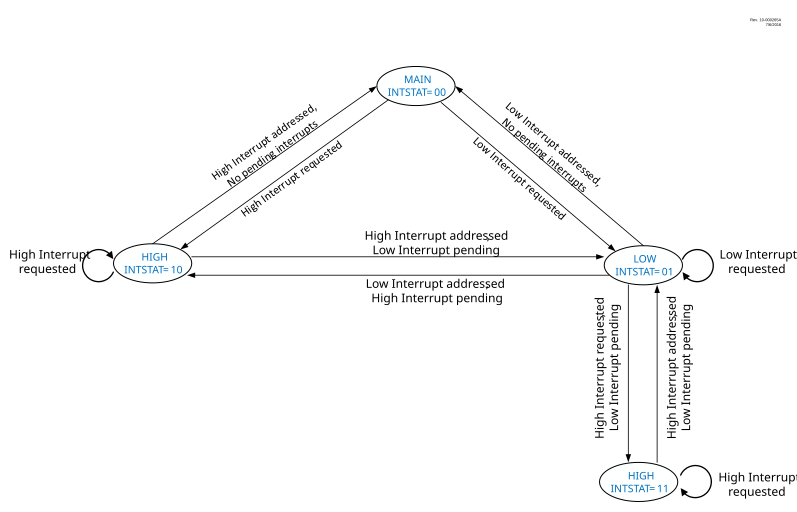

All pending interrupts are indicated by their respective flag bit being equal to a
‘1’ in the PIRx register. All pending interrupts are resolved using
the priority scheme explained in the Interrupt
Priority section.
Once the interrupt source to be serviced is resolved, the program execution vectors to the resolved interrupt vector addresses, as explained in Interrupt Vector Table section. The vector number is also stored in the WREG register. Most of the flag bits are required to be cleared by the application software, but in some cases, device hardware clears the interrupt automatically. Some flag bits are read-only in the PIRx registers. These flags are a summary of the source interrupts, and the corresponding interrupt flags of the source must be cleared.
A valid interrupt can be either a high- or low-priority interrupt when in the main routine or a high-priority interrupt when in a low-priority Interrupt Service Routine. Depending on the order of interrupt requests received and their relative timing, the CPU will be in a state of execution indicated by the STAT bit.
The state machine shown in Figure 11-1 and the subsequent sections detail the execution of interrupts when received in different orders.
